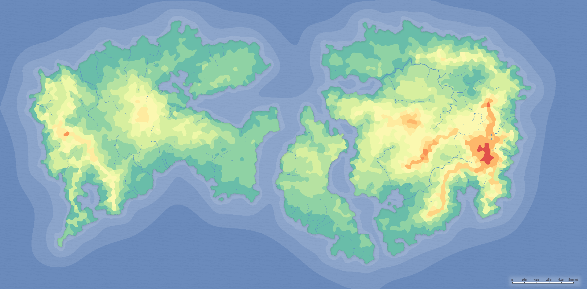
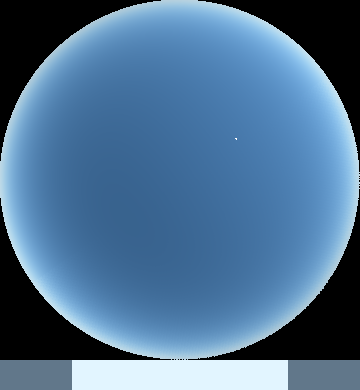
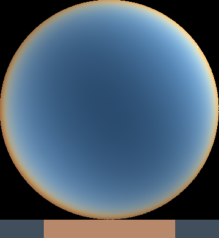

Hello and welcome to Ampira, my sci-fi world. Ampira is my worldbuilding project that I am currently working on. Im hoping to make a speculative evolution project based on this world. Ampira orbits a F6.1v class main sequence star called Adelle, and has a small terrestrial moon called ophilia. Ampira is a toasty 303 degrees kelvin, 30 degrees celsius, or 86 degrees farenheit, with a greenhouse effect of 2.3. Ampira is 0.98 earth masses, and is 1.6 AU away from Adelle. Above is Ampira's heightmap, with the redder areas being high elevations.


The atmosphere on Ampira is a sky blue in the daylight, and an orange in sunset and sunrise.
The leaves of future vegetation will be a dark green color.
The atmosphere of ampira contains a bit more krypton and xenon, making auroras be whitish purple in color. Purple IS my favorite color. The life on ampira will evolve from simple singular celled organisms to complex multicellular beings, marking the start of the evolutionary race.